Simons control WGS
Mutation count partition by mutation types
WGS Simons control data: 516 idiopathic autism families (2,064 individuals)
| index | mutation type | # mutations | |
|---|---|---|---|
| 1 | A->C (+ T->G) | 3,899+3,900=7,799 | |
| 2 | A->G (+ T->C) | 15,083+14,919=30,002 | |
| 3 | A->T (+ T->A) | 3,664+3,743=7,407 | |
| 4 | C->G (+ G->C) | 5,393+5,308=10,701 | |
| 5 | C->T (+ G->A) | 23,977+23,907=47,884 | |
| 6 | C->A (+ G->T) | 5,404+5,652=11,056 |

Model evalulation
Model 0 (M0): 3-mer only for 9 mutation types. This is implemented by enforcing all parameters to be zero in M1.
Model 1 (M1): 3-mer+features for pooled 9 mutation types
Model 2 (M2): 3-mer+features for 9 mutation types
Predictive density measure
- Whole human genome (hg19) is evenly split into 100bp windows
- use even (odd) windows as training data to estimate parameters \(\beta\)
- use another half odd (even) windows as validation data to make prediction
- windows with predicted density as
NaNdue to \(\widehat{\mu}_j=0\) are removed - M0 uses scale parameters to calculate predicted rate
- Overall these two models are comparable to each other, none of which outperforms another across all mutation types. For some mutation types, M0 works better and for others, M2 is better.
M0 vs M2 by mutation types
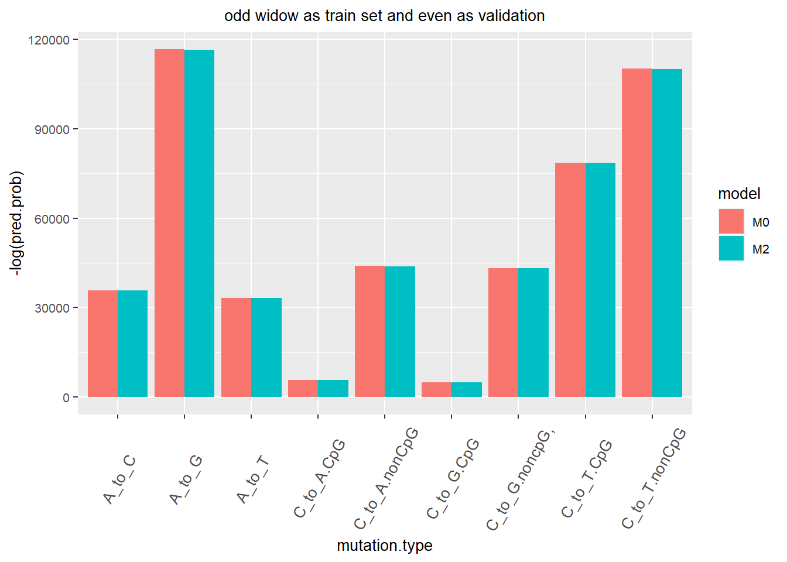
predicted probability of three models
In M0, M2 for each one of 9 mutation types, use even(odd) window as train set to estimate parameters, and use remaining odd(even) window to calculate predicted probability, and sum up across all mutation types. In M1, use odd(even) window as train set, and remaining even(odd) window to calculate predicted probability and add them up.
the higher predicted probability, the better, M1>M0>M2
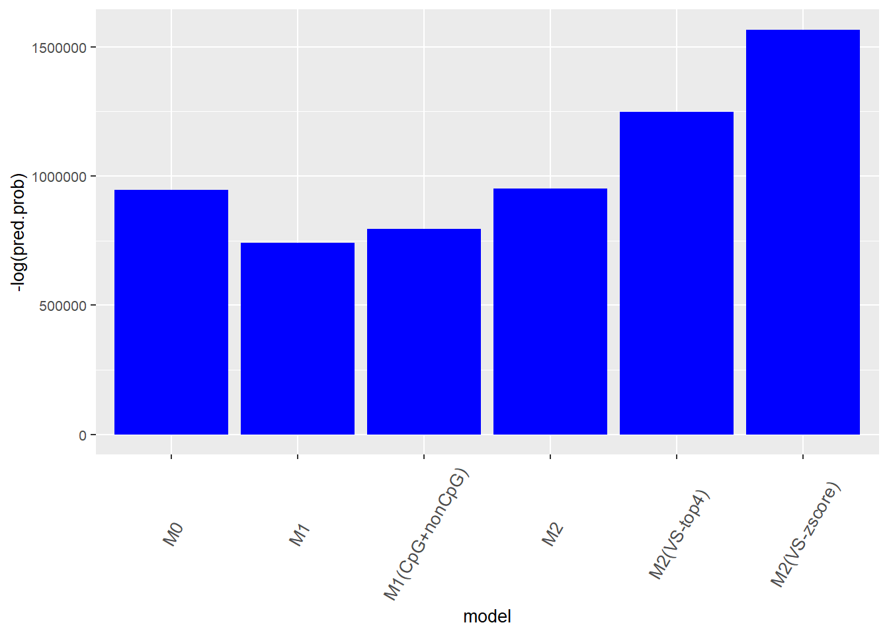
Expected rate vs observed rate
M0 vs M2 by pooling all mutation types
- each dot is one 100kb window by summing up 100bp windows
- For each one of 9 mutation types, use odd(even) windows to estimate parameters, calculate expected rate in the same odd (even) window and sum up over all mutation types.
- exp in M0 is expected rate adjusted by scaling parameter \(L=\frac{\sum y_i}{\sum \mu_i}\)
 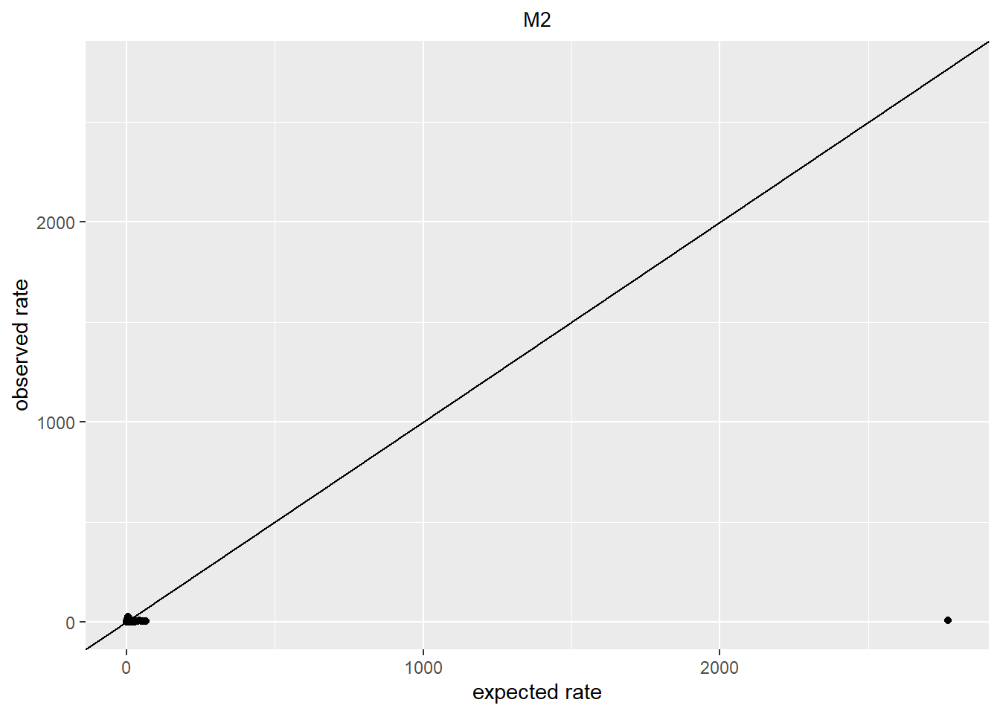
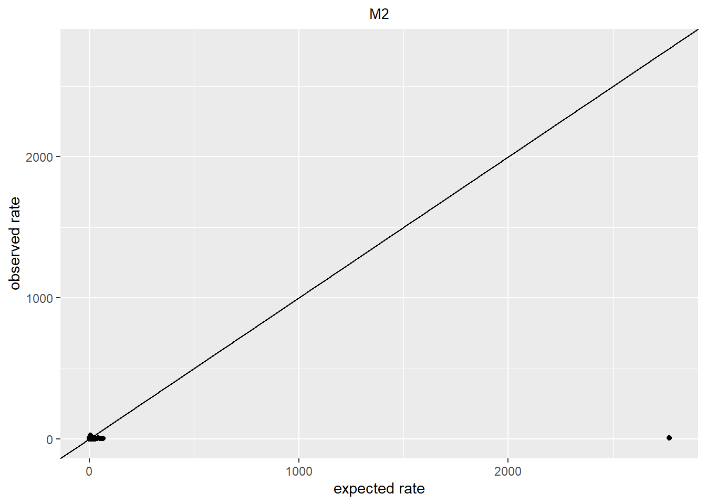
Outlier diagnostic
Note: In a few windows, the calculated expected rate could be unexpected high due to big recombination rate in several windows, such as 108.8.
Look at mutation type mutation.A_to_C at chromosome 8 as an example.
- recombination rate in those windows and across all windows
awk '$11>100' table.ASCWGS_20180504.WGS1902_hg19_controls_SNV_remove_recurrent_mutation.A_to_C.chr8.ERVbaseline.1DHS.2CpGisland.3lamin.4gc.5reptime.6RecombRate.7Exon.8H3K27ac.9H3K27me3.10H3K36me3.11H3K4me1.12H3K4me3.13H3K9ac.14H3K9me3.even.line
chr8 139247700 139247800 0 5.8508268e-08 0 0 1 0.41 . 108.804 0 0 1 0 0 0 0 1
chr8 139247900 139248000 0 3.7592286e-08 0 0 1 0.59 . 108.804 0 0 1 0 0 0 0 1
chr8 139248100 139248200 0 4.8498557e-08 0 0 1 0.44 . 108.804 0 0 1 0 0 0 0 1
there are 50 such windows in total and 50 in complementary strand mutation.T_to_G.
Those 50 windows have recombination rate (RR) of 108.804, more than 100 times high than average RR across all windows of 0.84.
awk '{sum+=$11} END {print sum}' table.ASCWGS_20180504.WGS1902_hg19_controls_SNV_remove_recurrent_mutation.A_to_C.chr8.ERVbaseline.1DHS.2CpGisland.3lamin.4gc.5reptime.6RecombRate.7Exon.8H3K27ac.9H3K27me3.10H3K36me3.11H3K4me1.12H3K4me3.13H3K9ac.14H3K9me3.even.line
615910
wc -l table.ASCWGS_20180504.WGS1902_hg19_controls_SNV_remove_recurrent_mutation.A_to_C.chr8.ERVbaseline.1DHS.2CpGisland.3lamin.4gc.5reptime.6RecombRate.7Exon.8H3K27ac.9H3K27me3.10H3K36me3.11H3K4me1.12H3K4me3.13H3K9ac.14H3K9me3.even.line
731820 table.ASCWGS_20180504.WGS1902_hg19_controls_SNV_remove_recurrent_mutation.A_to_C.chr8.ERVbaseline.1DHS.2CpGisland.3lamin.4gc.5reptime.6RecombRate.7Exon.8H3K27ac.9H3K27me3.10H3K36me3.11H3K4me1.12H3K4me3.13H3K9ac.14H3K9me3.even.line
> 615910/731820
[1] 0.8416141
- predicted rate in those windows and across all windows
all those 50 windows have predicted rate more than 0.5
awk '$5>0.5' table.ASCWGS_20180504.WGS1902_hg19_controls_SNV_remove_recurrent_mutation.A_to_C.and.mutation.T_to_G.ExpObsVar.even.window.as.train.bed
chr8 139247700 139247800 0 0.885879142920415 0.000179683336383749 3927.62074039213 -0.941211529317621 0.826701765213676
chr8 139247900 139248000 0 0.514188561224198 0.000103058730615795 2306.96721407905 -0.717069425665464 0.763334370034514
chr8 139248100 139248200 0 0.814619465876907 0.000164902137512123 3618.84938902892 -0.902562721298031 0.816620990462835
chr8 139248300 139248400 0 0.845005809651171 0.000171279641853248 3748.88094484896 -0.919241975570726 0.821015489926893
chr8 139248500 139248600 0 0.851571372578056 0.000173296884058543 3763.06476062817 -0.922806248666564 0.821945908060196
awk '$5>0.5' table.ASCWGS_20180504.WGS1902_hg19_controls_SNV_remove_recurrent_mutation.A_to_C.and.mutation.T_to_G.ExpObsVar.even.window.as.train.bed | wc -l
50however M0 gives predicted rate
grep 'chr8' table.ASCWGS_20180504.WGS1902_hg19_controls_SNV_remove_recurrent_mutation.A_to_C.and.mutation.T_to_G.ExpObsVar.even.window.as.train.with.zero.coefficient.and.intercept.bed | awk '$2>=139247700 && $2<=139257500'
chr8 139247700 139247800 0 1.00172949e-07 0.000179683336383749 3927.62074039213 -0.000316501104263476 0.500126265670176
chr8 139247900 139248000 0 5.868529e-08 0.000103058730615795 2306.96721407905 -0.000242250469555788 0.500096643953808
chr8 139248100 139248200 0 9.225769e-08 0.000164902137512123 3618.84938902892 -0.000303739510106934 0.500121174530947
chr8 139248300 139248400 0 9.5600379e-08 0.000171279641853248 3748.88094484896 -0.000309193109560999 0.500123350202247
chr8 139248500 139248600 0 9.6045573e-08 0.000173296884058543 3763.06476062817 -0.000309912202083106 0.500123637078644
grep 'chr8' table.ASCWGS_20180504.WGS1902_hg19_controls_SNV_remove_recurrent_mutation.A_to_C.and.mutation.T_to_G.ExpObsVar.even.window.as.train.with.zero.coefficient.and.intercept.bed | awk '$2>=139247700 && $2<=139257500' | wc -l
50
and adjusted rate is 3106*10^{-7}=10^{-4}. Those 50 windows are 1000 times higher than that in M0 for predicted rate.
awk '{sum+=$4} END {print sum}' table.ASCWGS_20180504.WGS1902_hg19_controls_SNV_remove_recurrent_mutation.A_to_C.and.mutation.T_to_G.ExpObsVar.even.window.as.train.with.zero.coefficient.and.intercept.bed
3922
awk '{sum+=$5} END {print sum}' table.ASCWGS_20180504.WGS1902_hg19_controls_SNV_remove_recurrent_mutation.A_to_C.and.mutation.T_to_G.ExpObsVar.even.window.as.train.with.zero.coefficient.and.intercept.bed
1.2627
> 3922/1.2627
[1] 3106.043
- verify calculation of predicted rate
> load("table.ASCWGS_20180504.WGS1902_hg19_controls_SNV_remove_recurrent_mutation.A_to_C.and.mutation.T_to_G.100bpwindow.ev> .line.train.model.RData")
>
> ls()
[1] "result"
> result
$para.est
(Intercept)
7.946130900
second.cate.matrix[, 3:(2 + feature_number)]DHS
0.111412210
second.cate.matrix[, 3:(2 + feature_number)]CpGisland
-0.061066892
second.cate.matrix[, 3:(2 + feature_number)]Lamin
0.049454107
second.cate.matrix[, 3:(2 + feature_number)]GC
-0.051563344
second.cate.matrix[, 3:(2 + feature_number)]RT
0.099047740
second.cate.matrix[, 3:(2 + feature_number)]RR
0.072775740
second.cate.matrix[, 3:(2 + feature_number)]Exon
0.033057750
second.cate.matrix[, 3:(2 + feature_number)]H3K27ac
-0.006163996
second.cate.matrix[, 3:(2 + feature_number)]H3K27me3
0.005764340
second.cate.matrix[, 3:(2 + feature_number)]H3K36me3
0.044806480
second.cate.matrix[, 3:(2 + feature_number)]H3K4me1
0.041314267
second.cate.matrix[, 3:(2 + feature_number)]H3K4me3
0.094146882
second.cate.matrix[, 3:(2 + feature_number)]H3K9ac
0.006397160
second.cate.matrix[, 3:(2 + feature_number)]H3K9me3
0.096692925
coff.est=c(7.946130900, 0.111412210, -0.061066892, 0.049454107, -0.051563344, 0.099047740, 0.072775740, 0.033057750, -0.006163996, 0.005764340,0.044806480, 0.041314267, 0.094146882, 0.006397160, 0.096692925)
cova.fea.a2c=c(0,5.8508268e-08,0,0,1,0.41,0,108.804,0,0,1,0,0,0,0,1) # covariate feature for window chr8 139247700 139247800 for mutation A->C
cova.fea.t2g=c(0,4.1664681e-08,0,0,1,0.41,0,108.804,0,0,1,0,0,0,0,1)
#covariate feature for window chr8 139247700 139247800 for mutation T->G
feature_number=14
exp.rate=exp(cova.fea.a2c[3:(3+feature_number-1)]%*%coff.est[2:15]+coff.est[1])*(cova.fea.a2c[2]+cova.fea.t2g[2]) # this is expected rate
# covariate features are identical in both strands, but baseline rate should be added up in cauculating prediction rate
cat("expected rate is", exp.rate, "\n") # which is exactly the one in file ## expected rate is 0.8858791# awk '$5>0.5' table.ASCWGS_20180504.WGS1902_hg19_controls_SNV_remove_recurrent_mutation.A_to_C.and.mutation.T_to_G.ExpObsVar.even.window.as.train.bed
#chr8 139247700 139247800 0 0.885879142920415 0.000179683336383749 3927.62074039213 -0.941211529317621 0.826701765213676
# what happens if replace 108.8 with average rate of 0.8
cova.fea.a2c=c(0,5.8508268e-08,0,0,1,0.41,0,0.8,0,0,1,0,0,0,0,1)
cova.fea.t2g=c(0,4.1664681e-08,0,0,1,0.41,0,0.8,0,0,1,0,0,0,0,1)
exp.rate=exp(cova.fea.a2c[3:(3+feature_number-1)]%*%coff.est[2:15]+coff.est[1])*(cova.fea.a2c[2]+cova.fea.t2g[2]) # this is expected rate
cat("after replace 108 with 0.8, expected rate is", exp.rate, "\n")## after replace 108 with 0.8, expected rate is 0.0003418133Chromosome wide scatter plot by combining all mutation types in M0, M2
- each dot is one chromosome by summing up across 100bp windows
- M0, M2 use odd(even) windows to estimate parameters, then calculate expected rate in the same odd(even) windows and sum up for each one of 9 mutation types. M1 use odd(even) windows for parameter estimation and calculate expected rate in the same window and add up.
- M0, M2 sum over all mutation types, M1 runs directly on mutation type combined sample
- observed rate on y axis and expected on x axis

- \(MSE=\sum\frac{(obs-exp)^2}{22}\)

Parameter estimate in M1 & M2
M1 vs M2
three continuous variables are firstly standardized, then converted into binary variable before collapsing in both M1 and M2 model
estimate in M1 is more robust than M2 in the sense that both odd and even windows produce similar estimates, but they could vary a lot across specific mutation types in M2
combinehighlighted by dashed horizontal lines denotes M1 model for pooled mutation types vs other 9 mutation types in M2 model on x axis
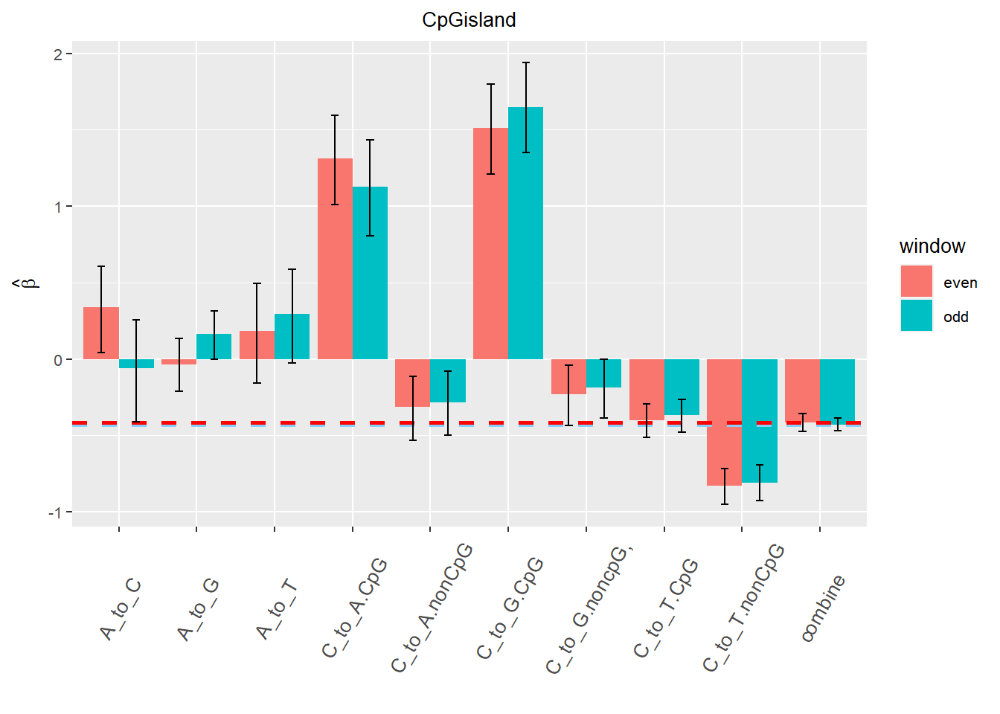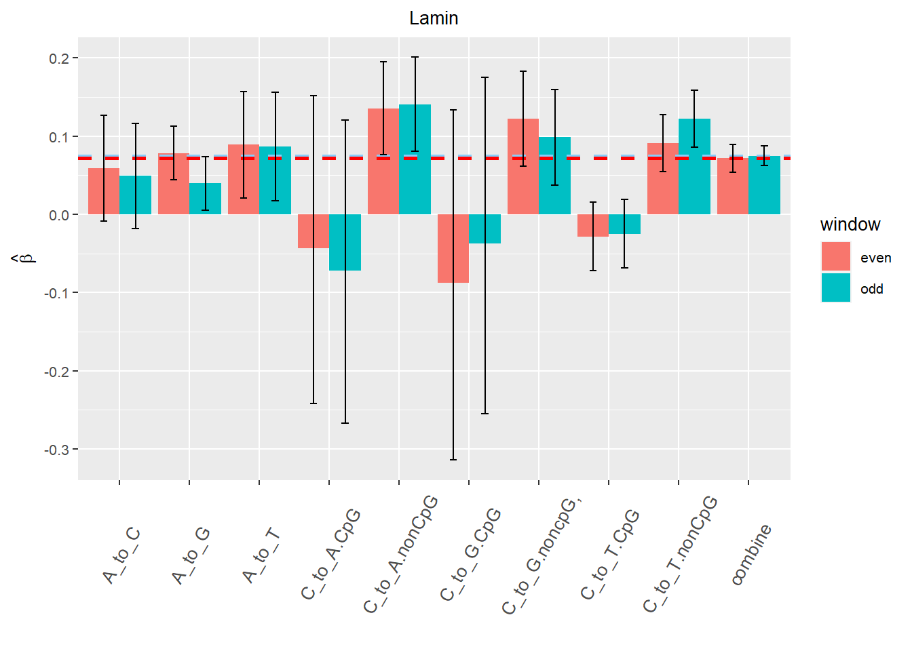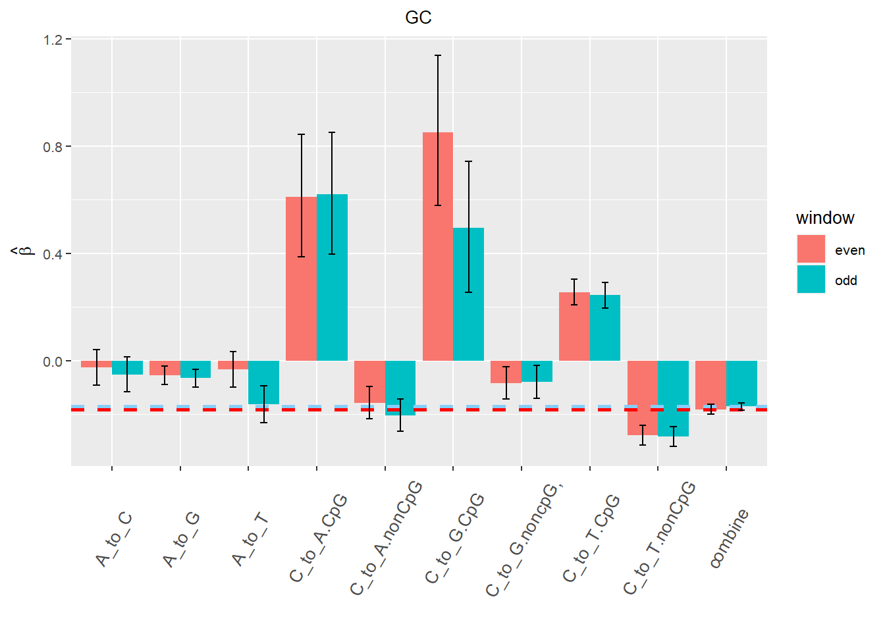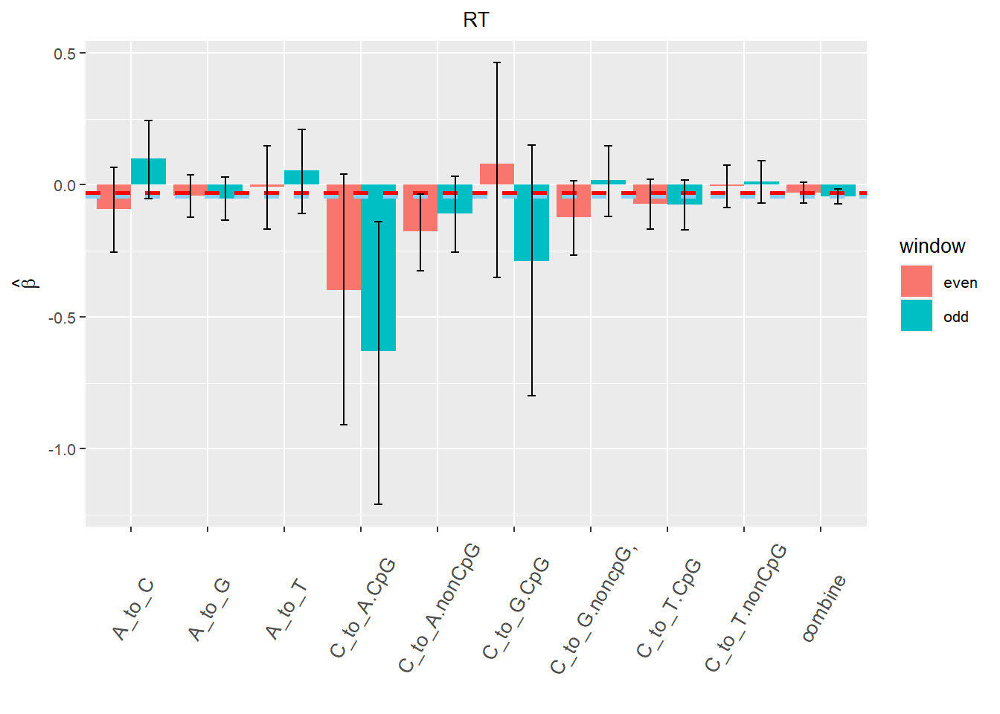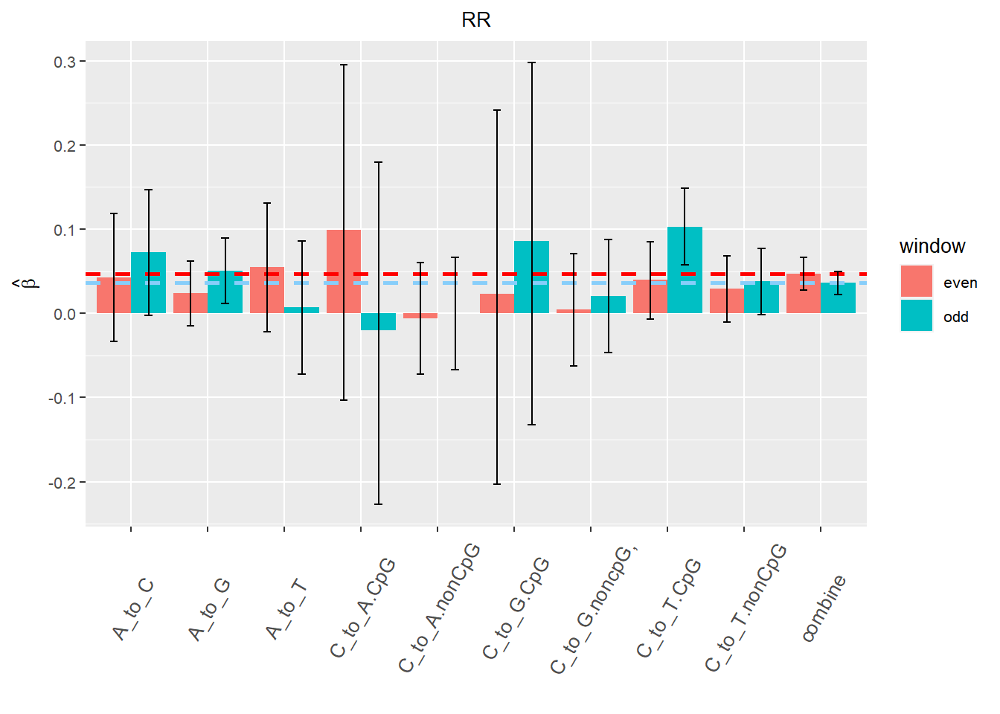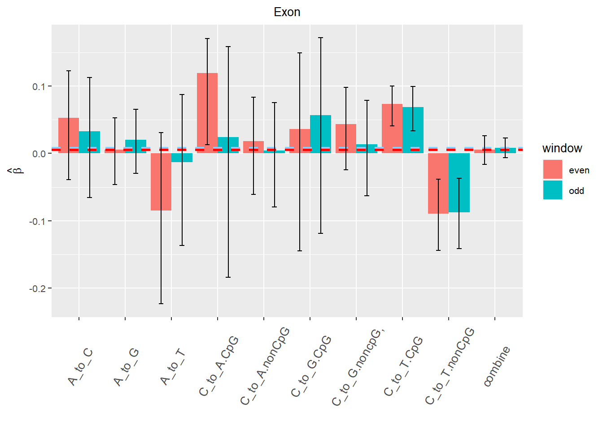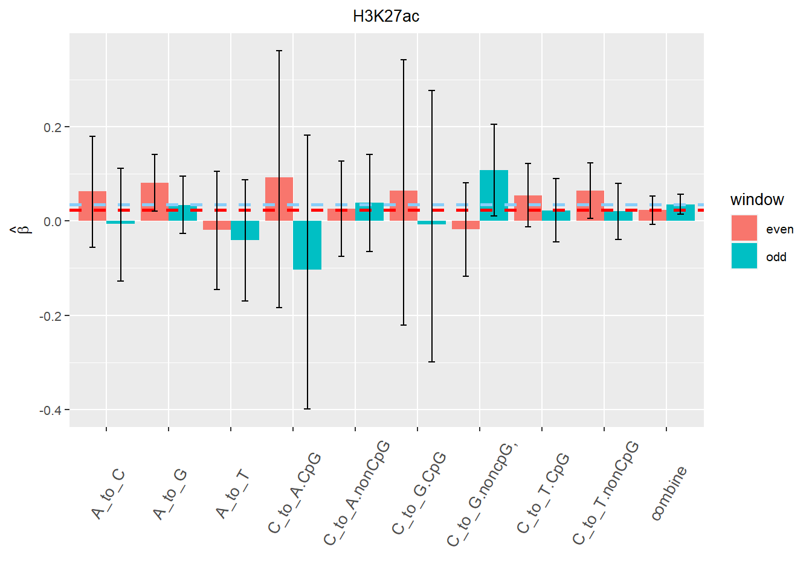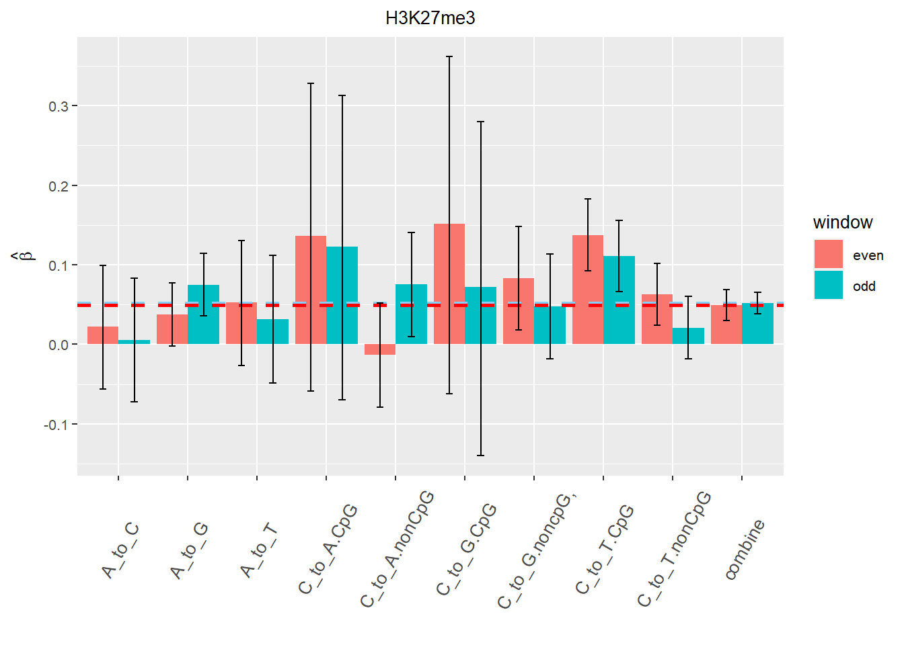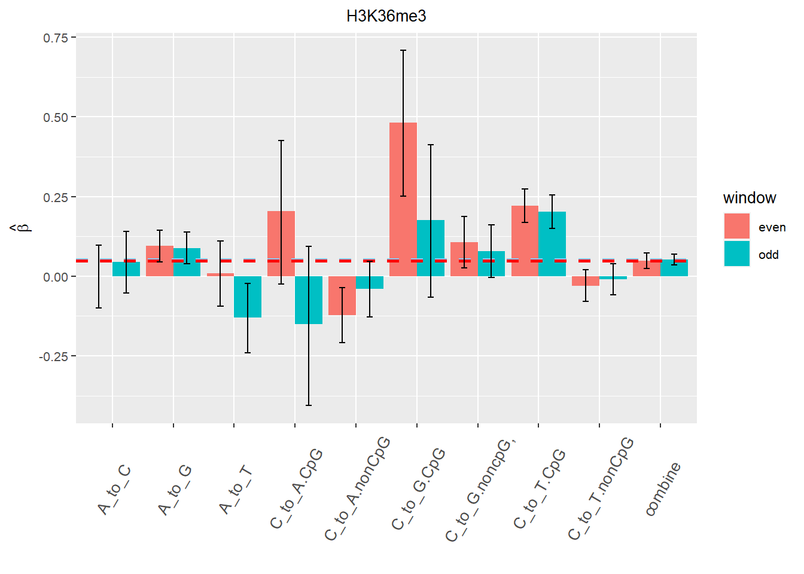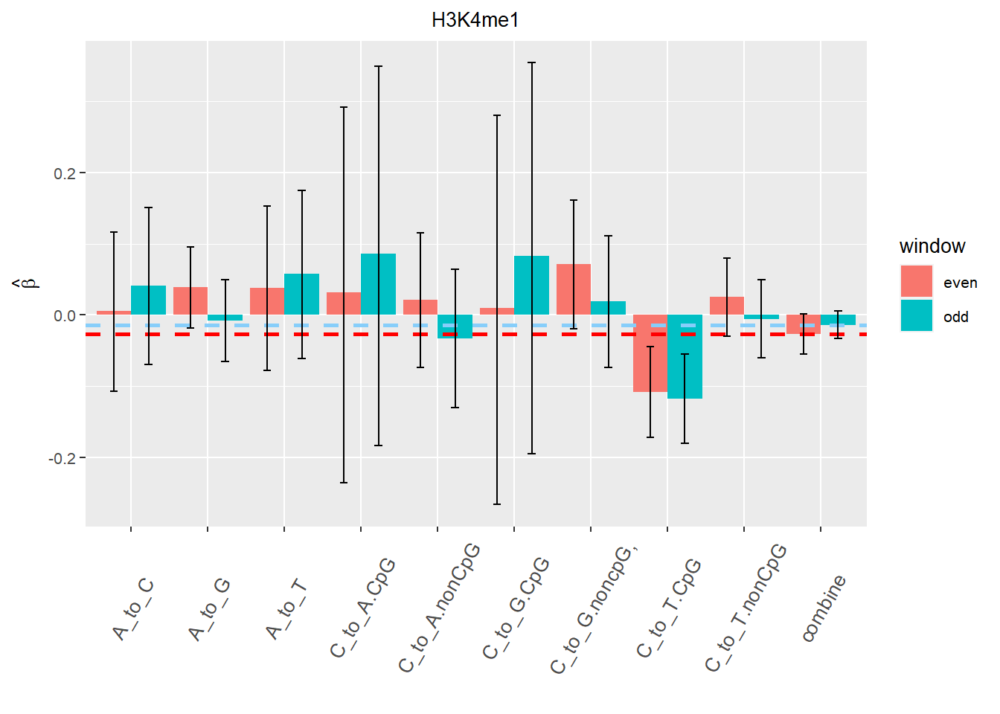 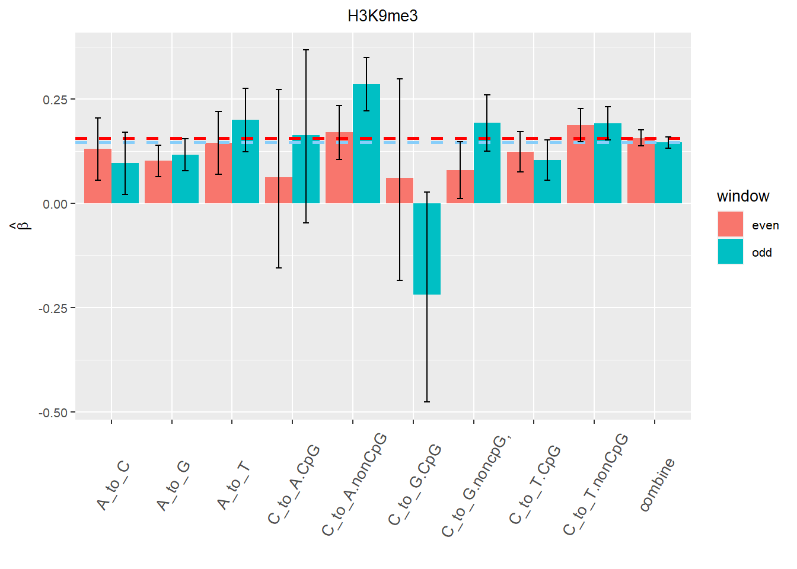
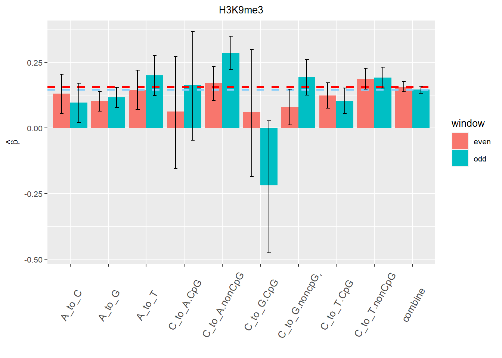
Parameter estimated in M1
- three continuous variables are firstly standardized, then converted into binary variable before collapsing
- vertical lines are 95% confidence interval
Referecnce
Genomic Patterns of De Novo Mutation in Simplex Autism, cell, 2017
This R Markdown site was created with workflowr